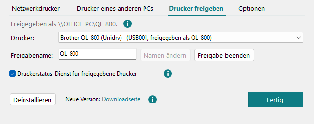

Druckereinrichtung
Hier fügen Sie QL-Drucker im Netzwerk und Drucker eines anderen PCs hinzu, geben einen QL-Drucker dieses PCs frei und schalten das Treiberprotokoll ein. Zum Drucken braucht ein USB-Drucker nichts davon: Die Installation richtet ihn selbst ein.
-
Öffnen
Drucker > Druckereinrichtung, ein Klick links in der Statusleiste auf „QL Unidrv … · … QL-Drucker“, oder unter Windows Installierte Apps > QL Unidrv printer driver > Ändern. Oben steht die Liste der QL-Drucker auf diesem PC; ein freigegebener Drucker zeigt seinen Freigabenamen. Bei einem Drucker eines anderen PCs steht „nicht mehr freigegeben“, wenn der andere PC ihn nicht mehr freigibt (oder die Freigabe umbenannt hat), und „nicht erreichbar“, wenn der andere PC nicht antwortet: Druckaufträge kommen dann nicht an. Entfernen Sie ihn hier, und fügen Sie ihn bei Bedarf mit dem neuen Namen wieder hinzu. Für den gewählten Drucker: Drucker entfernen (fragt vorher; der Treiber bleibt installiert) und Druckereigenschaften (das Fenster von Windows: Anschlüsse und mehr; auch per Doppelklick). Ist ein QL-Drucker per USB angeschlossen, aber hier noch nicht eingerichtet (etwa nach Drucker entfernen: Windows legt ihn nicht von selbst wieder an), steht unter der Liste eine Zeile mit Drucker hinzufügen; bei mehreren solchen Druckern zählt die Zeile sie, und der Knopf lässt einen wählen. Die Zeile folgt, wenn ein Drucker bei offenem Fenster eingesteckt oder ausgesteckt wird. Der neue Drucker ist nicht freigegeben; das Fenster bietet danach Freigeben an. Einen freigegebenen Drucker halten PCs, die darüber drucken, eventuell noch offen: Dann schließt Windows das Entfernen erst ab, wenn dort der Dienst Druckwarteschlange oder einer der beiden PCs neu startet; das Fenster sagt es.
Unter der Liste stehen vier Registerkarten; das Fenster öffnet die zuletzt benutzte. Strg+Tab wechselt zwischen ihnen.

-
Netzwerkdrucker
Für QL-Drucker mit Ethernet oder WLAN: IP-Adresse eintippen. Sie steht auf dem Konfigurationsetikett, das der Drucker druckt, oder in seinen Netzwerkeinstellungen. Bei Modell bleibt (Drucker fragen): Der Drucker nennt sein Modell selbst; nur wenn er nicht antwortet, wählen Sie es aus. Dann Hinzufügen.
Das Fenster zeigt, was hinzugefügt wird, mit Modell und eingelegter Rolle; Drucker hinzufügen fragt einmal nach Administratorrechten. Danach bietet es Testetikett drucken, Druckwarteschlange öffnen und Als Standarddrucker festlegen. Jeder PC richtet einen Netzwerkdrucker so über seine Adresse ein; er wird nicht über einen PC freigegeben.
-
Drucker eines anderen PCs
Ein USB-Drucker an einem anderen PC lässt sich über eine Freigabe mitbenutzen. Zuerst am anderen PC: den Drucker freigeben (Drucker freigeben). Dann auf diesem PC einmal
\\Name-des-anderen-PCsim Explorer öffnen und sich mit „Anmeldedaten speichern“ anmelden.Anschließend hier bei Freigabe
\\PC\Freigabenameeintippen, das Modell wählen und auf Hinzufügen klicken. Heißt die Freigabe wie das Modell (\\PC\QL-800), ist es schon gewählt. -
Drucker freigeben
Hier bekommen andere PCs einen QL-Drucker, der per USB an diesem PC angeschlossen ist. Wählen Sie den Drucker, behalten Sie den vorgeschlagenen Freigabenamen (das Modell, etwa
QL-800) oder tippen Sie einen anderen ein, und klicken Sie auf Freigeben. Ein Freigabename hat höchstens 80 Zeichen, keines von" / \ [ ] : | < > + = ; , ? *, und keine andere Freigabe auf diesem PC darf ihn schon benutzen; das Fenster sagt es schon beim Tippen. Danach zeigt es die Adresse für die anderen PCs, etwa\\DIESER-PC\QL-800.Bei einem freigegebenen Drucker ändert Namen ändern den Freigabenamen, und Freigabe beenden beendet sie. Beides fragt vorher: PCs, die über den alten Namen drucken, erreichen den Drucker danach nicht mehr und müssen ihn neu hinzufügen. Jede Änderung fragt einmal nach Administratorrechten.
Andere PCs erreichen die Freigabe nur, wenn die Datei- und Druckerfreigabe von Windows an ist und das Netzwerk nicht als öffentlich eingestellt ist. Sonst sagt es die Seite, mit Einstellungen öffnen.
- Druckerstatus-Dienst für freigegebene Drucker
- Ein Windows-Dienst fragt die Drucker dieses PCs alle 3 Sekunden ab, so sehen auch die PCs, die über eine Freigabe drucken, Rolle und Fehler und können Testetiketten drucken. Drucken funktioniert auch ohne ihn.
Netzwerkdrucker werden hier nicht freigegeben: Jeder PC richtet sie über ihre Adresse ein.
-
Optionen
- Treiberprotokoll zur Fehlersuche
- schreibt mit, was der Treiber bei jedem Druck tut
(
C:\ProgramData\QLUnidrv\log\plugin.log). Nur für eine Fehlermeldung einschalten, danach wieder aus. Fragt einmal nach Administratorrechten.